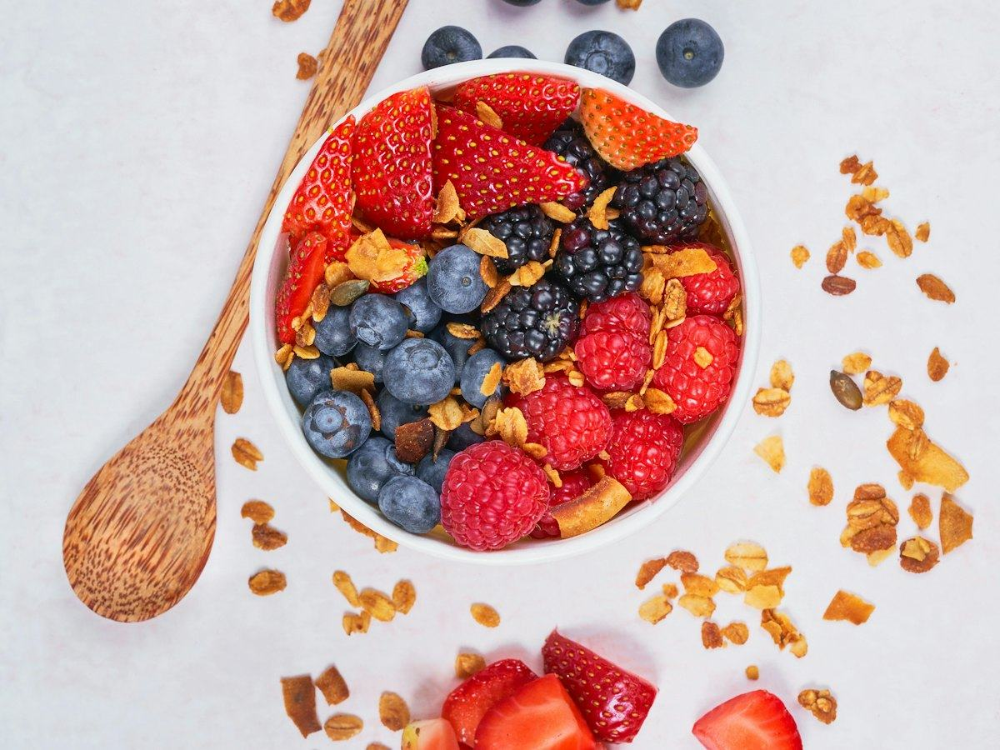
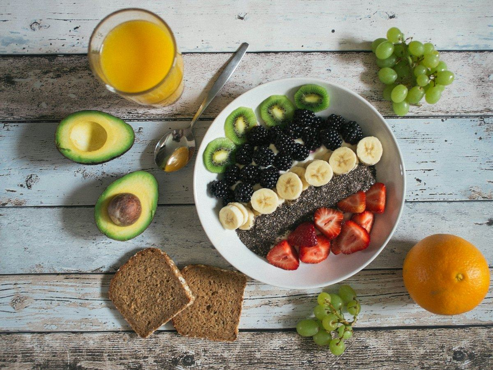

Ayuno
Ayuno intermitente: qué dice realmente la ciencia en 2026
Revisamos la evidencia más reciente (Cochrane 2026, BMJ y OCU) sobre el ayuno intermitente: qué sabemos, qué no y qué esperar si lo pruebas.
 Por el equipo editorial de Pombo AI
Por el equipo editorial de Pombo AI
12 nov 2026 · 5 min de lectura

El ayuno termina y llega el momento clave: la primera comida. Si llegas con mucha hambre es fácil comer deprisa y de más. Estas ideas te ayudan a romperlo con cabeza.
Las revisiones más recientes coinciden en que el ayuno intermitente no hace milagros. La revisión Cochrane de 2026 encontró poca o ninguna diferencia de peso frente al asesoramiento dietético tradicional, y la OCU recuerda que los estudios no muestran una gran diferencia entre ayunar y reducir calorías de forma convencional. Por eso, lo que comes cuando rompes el ayuno importa tanto como las horas que ayunas.

Controla tu ayuno con Pombo AI
El temporizador de ayuno del app tiene planes 14:10, 16:8, 18:6 y 20:4, o uno personalizado de 1 a 48 horas. Te avisa al terminar, guarda tu historial y puedes exportarlo en PDF o CSV. Cuando rompas el ayuno, haz una foto a tu plato para registrar calorías y macros.
No hay un alimento obligatorio. Una comida normal y equilibrada, con proteína, verdura y una fuente de hidratos, suele funcionar mejor que lanzarse a picar lo primero que haya.
Según la OCU, los estudios no muestran una gran diferencia entre ayunar y seguir una dieta de restricción calórica convencional, así que lo que comes en la ventana sigue contando.
Aviso: Este artículo es informativo y no sustituye el consejo de un médico o dietista-nutricionista. Si tienes una enfermedad, tomas medicación, estás embarazada o has tenido un trastorno de la conducta alimentaria, consulta con un profesional antes de cambiar tu alimentación.
Revisamos la evidencia más reciente (Cochrane 2026, BMJ y OCU) sobre el ayuno intermitente: qué sabemos, qué no y qué esperar si lo pruebas.
Comparamos los métodos de ayuno intermitente más conocidos: cómo funcionan, qué dice el BMJ de cada uno y cómo elegir el que puedas mantener.
Qué beneficios cardiometabólicos se han estudiado, qué efectos adversos se mencionan y qué precauciones tomar antes de empezar un ayuno intermitente.